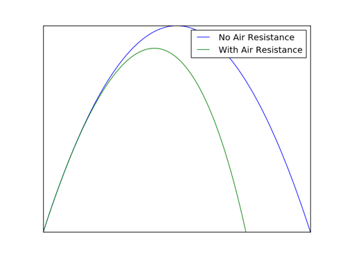
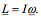

When a particle is launched at an angle, its path of flight, or trajectory, forms an arc shape known in mathematics as a parabola. This is due to the fact it is accelerated downwards by Earth’s gravitational field. The trajectory of a particle launched with velocity u at angle θ is shown in the diagram below:

Fig 1: Diagram of particle trajectory

Fig 2: The horizontal and vertical components of the launch vector
The horizontal and vertical components of the initial velocity u are ucosθ and usinθ respectively. These results can be derived from basic trigonometry, as the velocity and its horizontal and vertical components can be made into a right angled triangle, as shown in the diagram above.
To calculate the range and height of the projectile, we must first be familiar with the 'SUVAT' equations. Here u is the initial velocity, v is the final velocity, a is the acceleration and t is the time taken.

We can express the acceleration, a, mathematically as:
Multiplying both sides by t, we get:
Rearranging, we arrive at the requisite equation:
The SUVAT equations only hold for constant acceleration, so we can write the average velocity as:
The displacement is equal to the average velocity multiplied by the time:
By substituting our equation for acceleration from the derivation of the first SUVAT equation into the second SUVAT equation, we get:
Equivalently, we can substitute in the expression for u of the first SUVAT equation to obtain a less commonly used equation:
To get this equation, we must find a way of eliminating the time, t. By rearranging the expression for acceleration from the derivation of the first SUVAT equation, we get:
By substituting this into the second SUVAT equation, we get:
With the velocity split into two components at right angles to each other, they are now independent of each other, the only variable in common being the time of flight. This very much simplifies our approach to calculate the range. In these calculations we will assume no air resistance.
Firstly, let’s consider the vertical velocity, as this is needed to calculate the time of flight. We can use the first SUVAT equation to calculate this time. In this case, our initial velocity will be the vertical component of u, equal to ucosθ. The particle is decelerated to 0, which is our final velocity v, as it is being decelerated by gravity, which acts in the downwards direction. This means we use a negative sign and a=-g. As shown in the diagram, the time in which this occurs is only in the first half of the trajectory. Substituting these values into the first SUVAT equation, we get:
Now we can consider the horizontal component. Since this is acting at 90° to the gravitational field, no work is done, so it experiences no acceleration. This means that the horizontal component is constant throughout the flight (since we are ignoring air resistance). We can therefore use the simple relation distance=speed x time. The speed in this case is ucosθ, the horizontal component of u.
Therefore, using our previously derived equation for the time of flight, the range, d is given by:
Using the double angle formula 2sinθcosθ=sin2θ
The maximum value a sine or cosine function can take is 1.
Fig 3: Maximum value of a sine function.
The maximum range is therefore found when:
The maximum height, h reached by the projectile occurs when the vertical velocity component is 0. Using the 2nd SUVAT equation, we find that:
The SUVAT equations as stated above are only valid for motion under constant acceleration. This acceleration however is not possible in the real world. Air resistance plays a big part in the motion of particles on Earth.
It is caused by the collisions between the projectile and the molecules constituting the air. It is proportional to the square of the speed but works against the motion of the particle:
Here, k is some constant dependent on the shape of the projectile and the density of the surrounding gas or liquid. When modelling with air resistance it is important to include this term as part of the forces acting on the projectile.
Here is a comparison of the trajectory of a projectile with and without air resistance:
Fig 4: Comparing a projectile moving through air and through a vacuum.
A vector is a mathematical object that has both magnitude and direction. They can be visualised as arrows pointing in a direction, or as the difference between two points, as seen in Figure 1:
Fig 5: Vectors as arrows or as the difference between two points.
They are usually denoted by an underline, whereas the magnitude or length of a vector is the same symbol without the underscore.
The vector u can be written in multiple ways, all meaning the same thing:
The hats represent unit vectors, with length 1. One can add and subtract vectors, but they cannot be multiplied and divided like scalars, however other operations are available.
Fig 6: Vector addition and subtraction.
One operation that is exclusive to vectors is the dot product. It is defined as follows:
Note it takes two vectors and outputs a scalar.
It has a second definition that is more useful for physical solutions:
Here θ is the angle between the two vectors. This definition can be used to find the magnitude of a vector:
Otherwise known as the vector product, the cross product takes two vectors and outputs another vector. It is defined as:
The unit vector in the n direction is perpendicular to the plane formed by vectors u and v as shown by Figure 7:
Fig 7: A visualisation of the cross product.
It makes very little sense to describe the motion of an object travelling around the circumference of a circle in Cartesian coordinates. An appropriate coordinate transform can be performed so that much more natural units are used.
Take an arbitrary circle of radius r. Any point on that circle can be described by the angle subtended from the x-axis as in Fig 8:
Fig 8: Marking points on a circle with an angle.
However, if θ were held constant, one could describe every point on a straight line by varying the radius of the circle. Thus, it is possible to describe every point on a two-dimensional plane via the coordinates r and θ. These are polar coordinates. They transform to Cartesian coordinates by the following rules:
It is important to define the units of the angular coordinates here, as a careful choice leads to some useful relationships. A radian is defined as the angle that sweeps out the portion of the circumference that is equal in length to the radius of the circle.
Fig 9: A radian.
This definition gives the following result:
Just as in linear dynamics, angular dynamics has notions of both velocity and acceleration. First it is important to note the difference between tangential and radial components. As in linear motion, one can decompose these vectors into two components that are perpendicular to each other. The radial component points outwards from the centre of the circle and the tangential component lies tangent to the circumference. These are considered to be in the r and θ directions respectively.
Fig 10: The angular components of a vector.
Clearly the θ direction changes as the vector is moved around the circle, hence it's direction is defined using the right-hand rule. Thus, in Figure 10, the θ directional vector points out of the screen towards the reader.
Now consider an object moving with speed v on a circular path. In polar coordinates, this particle is moving with a constant tangential velocity vector, but has a stationary velocity radial component. Using the relation between arc lengths and angle, this velocity vector can be expressed as follows:
This ω is the angular velocity of the object and is defined as the rate of change of the angle swept out by the object.
The next logical step is to define the acceleration of an object on a circular path. Considering the same example as above, the angular acceleration, α, is defined as the rate of change of the angular velocity:
Here, a is the tangential component of the object's acceleration.
This object also has another acceleration, causing the circular motion. Acceleration is defined as the rate of change of velocity, so change in direction is a result of an acceleration. The acceleration causing this motion is known as centripetal acceleration.
Using the same system, consider the change in direction of two velocity vectors after time interval Δt. This interval is small enough such that the arc length swept out by the object can be taken to be a straight line:
Fig 11: The change in velocity of an object moving along a circular path at a constant speed.
The triangle formed by the vectors v1, v2 and v2 - v1 is similar to the triangle formed by the radius of the circle on two sides and the arc length swept out Δs, see Fig 11. This gives the following relation:
The magnitude of the average acceleration is therefore:
Taking the limit as Δt → 0, the magnitude of the instantaneous radial acceleration or centripetal acceleration is;
Now that both the radial and tangential components of the object are known, the total acceleration for an object in circular motion can be calculated:
Now that analogues for speed and acceleration have been defined in the rotational world, some analogue of mass is needed to find energies and momenta. Such a quantity is known as the moment of inertia, I:
Here, dm is some mass element at distance r from the axis of rotation.
For some objects it may be easier to express this definition in terms of the density, ρ.
Take a cylindrical rod of length l rotating about its endpoint:
Fig 11: A rotating rod.
Here dm is given by:
where M is the total mass of the rod and the coordinate r is the distance from the axis of rotation. Using the definition:
In linear dynamics, both the laws of conservation of momentum and conservation of energy are used to great extent and success in modelling motion. Similar conservation laws apply in rotating bodies too.
Angular kinetic energy is defined in exactly the same way as in linear dynamics, but using rotational analogues:
The kinetic energy can be combined with translational kinetic energy for a body rotating about its centre of mass, such that the total kinetic energy of a body in this motion is given by:
Angular momentum is more complex. It is defined using the cross product (see vectors above). For a particle moving with linear momentum p at a position from the axis of rotation defined by the vector r, the angular momentum is:
(One can also define the angular velocity of an object moving with velocity v relative to an observer as rxv. The acceleration can be defined similarly.
To calculate the angular momentum of a rotating body about an axis, one would have to sum the angular momenta of each element of mass. However, this procedure is contained within the definition of a moment of inertia, thus the angular momentum of a rigid rotating body is given by:
Torque is the rotational analogue of a force. It causes rotational acceleration, α. It is also defined using the cross product:
One can use Newton's 2nd law of motion to develop a rotational analogue:
For a rigid rotating body one simply uses the above equation in combination with the expression for angular momentum to find how torque relates to the motion of the body:
In keeping with tying each quantity back to its linear analogue, work done is still considered to be a force moved through a distance. However, the ‘force’ and ‘distance’ quantities are just the rotational analogues. Thus, the rotational work done is given by:
Power is simply the rate of change of work done,
For a constant torque, this can be expressed as: